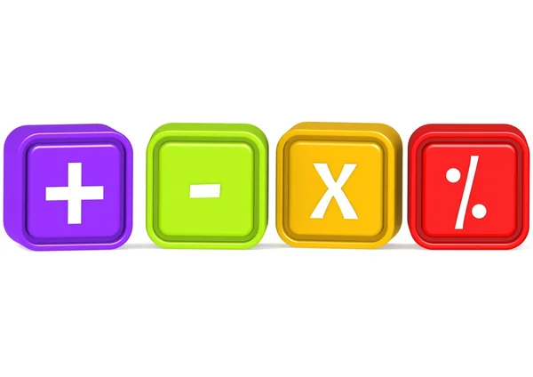

Los operadores básicos son símbolos utilizados para realizar operaciones matemáticas entre dos valores.
Son fundamentales en programación, algoritmos y hojas de cálculo.
Suma (+) → 8 + 2 = 10
Resta (-) → 8 - 2 = 6
Multiplicación (*) → 8 * 2 = 16
División (/) → 8 / 2 = 4
Módulo (%) → 8 % 3 = 2

| Operador | Función |
|---|---|
| + | Suma |
| - | Resta |
| * | Multiplicación |
| / | División |
| % | Módulo |